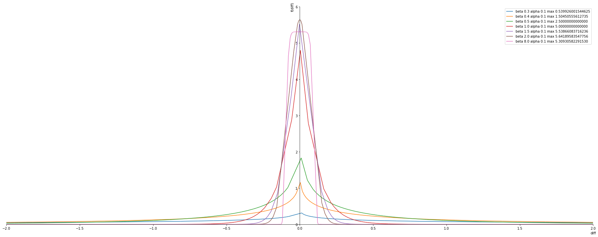
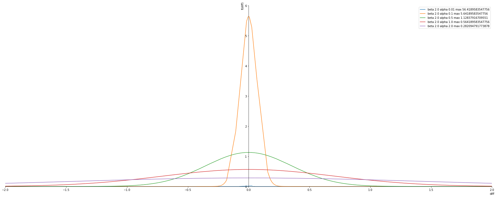
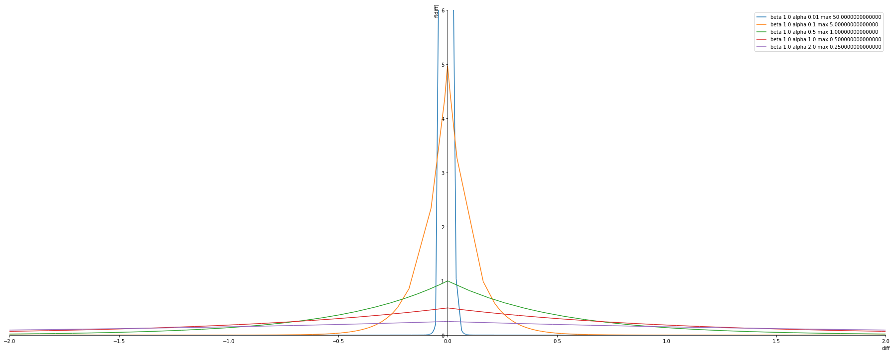
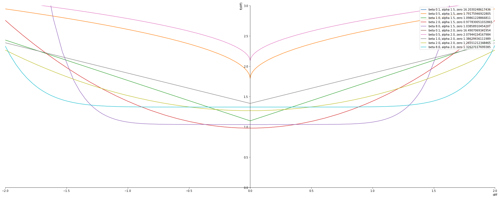
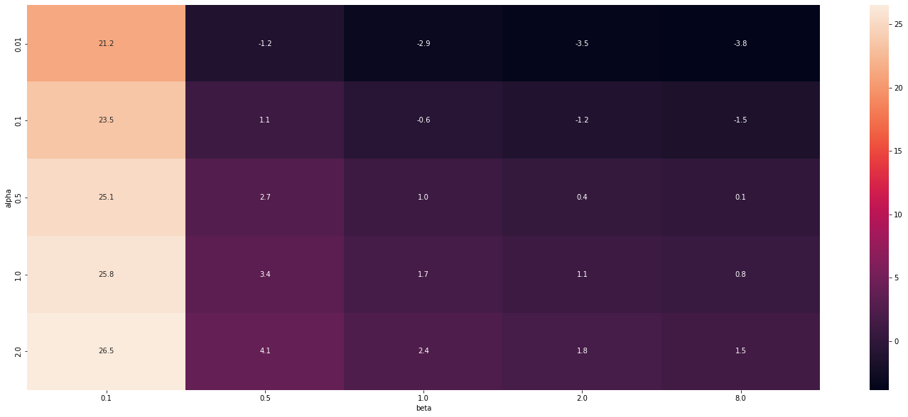

import sympy.plotting as symplot
import sympy as sym
sym.init_printing(use_unicode=True)
import numpy as np
import pandas as pd
import seaborn as sns
import matplotlib.colors as mcolors
import matplotlib.pyplot as plt
color = list(mcolors.TABLEAU_COLORS)
plt.rcParams['figure.figsize'] = 25, 10 #Plot Size
plt.rcParams['legend.fontsize']=10 #Legend Size
from typing import List,Tuple
Exponential Power Distribution
Generalized Gaussian Distirbution
Plotting the PDF and Negative log likelihood of the distribution.
Analysis on the effect of the parameters on the pdf and the nll.
import pandas as pd
import seaborn as sns
import numpy as npSympy Plotting Function
def plot_exponential_power_distribution(alphas: List,
betas: List,
sympy_function,
plot_ylim: Tuple = (0,6),
plot_xlim: Tuple = (-2,2)):
xlim = 1e-21
p1 = symplot.plot(sympy_function.subs([(beta, betas[0]), (alpha, alphas[0])]), (diff,-xlim,xlim), show=False, line_color='darkgreen')
p1[0].label = ''
i=0
for a in alphas:
for b in betas:
p = symplot.plot(sympy_function.subs([(beta,b), (alpha, a)]), (diff,-3,3), show=False, line_color=color[i%len(color)])
p[0].label = 'beta %s, alpha %s, zero %s'% (str(b),str(a),str(sympy_function.subs([(beta,b), (diff,0),(alpha, a)])))
p1.append(p[0])
i = i+1
p1.legend = True
p1.ylim = plot_ylim
p1.xlim = plot_xlim
p1.show()Probability Density function
\[ \frac{\beta}{2 \alpha \Gamma(1/\beta)} e^{- (|x - \mu | / \alpha)^{\beta}} \]
Replacing \(x - \mu\) with \(diff\) a single variable.
\[ \frac{\beta}{2 \alpha \Gamma(1/\beta)} e^{- (|diff | / \alpha)^{\beta}} \]
alpha, beta, diff = sym.symbols('alpha, beta, diff')pdf = ( beta / (2 * alpha * sym.gamma(1 / beta)) ) * sym.exp(-((sym.Abs(diff)/alpha)**beta))
pdfFixed alpha changing beta
Observtion
- The Maximum is at \(beta = 2.0\) (Gaussian) at any fixed alpha
- \(beta = 0.3\) the max pdf is 0.5 which is less than 1 -> can be considered for the minimum beta value
alphas = [0.1]
betas = [ 0.3, 0.4, 0.5, 1.0, 1.5, 2.0, 8.0]
plot_exponential_power_distribution(alphas, betas, pdf)
Fixed beta changing alpha
Observtion
- Alpha is the variance value -> the lower the better the more confident.
alphas = [ 0.01, 0.1, 0.5, 1.0, 2.0]
betas = [ 2.0] #Gussian Distirbution
plot_exponential_power_distribution(alphas, betas, pdf)
alphas = [ 0.01, 0.1, 0.5, 1.0, 2.0]
betas = [ 1.0] #Laplace distirbution
plot_exponential_power_distribution(alphas, betas, pdf)
Negative log likelihood
Here we take the logarithmic of the pdf and the invert it .
The NLL are usually used as loss function in regresion problems.
nll_pdf = -1 * sym.log(pdf)
nll_pdfnll_pdf.subs([(beta,0.5), (diff,0),(alpha, 1.0)])
alphas = [1.5, 2.0]
betas = [ 0.1, 0.5, 1.0, 2.0, 8.0]
plot_exponential_power_distribution(alphas, betas, nll_pdf, plot_ylim=(0,3))
Entropy
\[ \frac{1}{\beta} - \log [ \frac{\beta}{2 \alpha \Gamma(1/\beta)}] \]
Observations
- With reducing value of alpha entropy reduces (since alpha is the variance this fits perfectly)
- With increasing beta the entropy reduces
- This is little counter intutive
- Expected that entropy will be low only for beta = 2 (Gaussian) since it had max value in pdf.
- But apparently when beta increases the confidence increases that the value is between some range and not a single value .
#Modelling in sympy
entropy = (1 / beta) - sym.log(beta / (2 * alpha * sym.gamma(1/beta)) )
entropybetas = [ 0.1, 0.5, 1.0, 2.0, 8.0]
alphas = [ 0.01, 0.1, 0.5, 1.0, 2.0]
val = []
for a in alphas:
for b in betas:
#print ('Entropy : {}, beta: {}, alpha: {}'.format(entropy.subs([(alpha, a), (beta,b)]), b, a))
val.append([float(entropy.subs([(alpha, a), (beta,b)])), b, a])
entropy_data_frame = pd.DataFrame(val, columns=['entropy','beta', 'alpha'])
print (entropy_data_frame.dtypes)
entropy_data_frame = entropy_data_frame.pivot('alpha', 'beta', 'entropy')
print (entropy_data_frame.dtypes)
entropy_data_frameentropy float64
beta float64
alpha float64
dtype: object
beta
0.1 float64
0.5 float64
1.0 float64
2.0 float64
8.0 float64
dtype: object| beta | 0.1 | 0.5 | 1.0 | 2.0 | 8.0 |
|---|---|---|---|---|---|
| alpha | |||||
| 0.01 | 21.192390 | -1.218876 | -2.912023 | -3.532805 | -3.847046 |
| 0.10 | 23.494975 | 1.083709 | -0.609438 | -1.230220 | -1.544461 |
| 0.50 | 25.104413 | 2.693147 | 1.000000 | 0.379218 | 0.064977 |
| 1.00 | 25.797560 | 3.386294 | 1.693147 | 1.072365 | 0.758124 |
| 2.00 | 26.490707 | 4.079442 | 2.386294 | 1.765512 | 1.451271 |
sns.heatmap(entropy_data_frame, annot=True, fmt=".1f")<matplotlib.axes._subplots.AxesSubplot at 0x7f34544d1b80>
Interval
ToDO
- Can we calculucalte interval from variance
- Can we calculate interval from the quantile
- interval is ppf function which is inverse cdf function
- We have the CDF function . How to calculate the inverse CDF ?
import scipy.stats as statsa = 0.1
b = 2.0
p = 0.9
stats.gamma()<scipy.stats._continuous_distns.gamma_gen at 0x7fbaf9fd26a0>cdf = 0.5 + (sym.sign(diff)/2 )*(1/sym.gamma(1/beta))